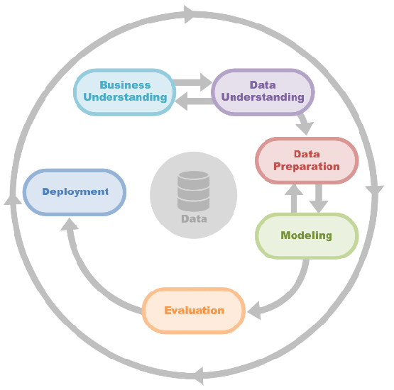
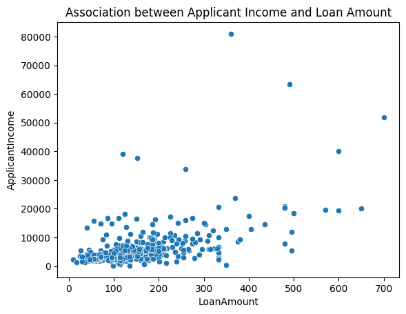
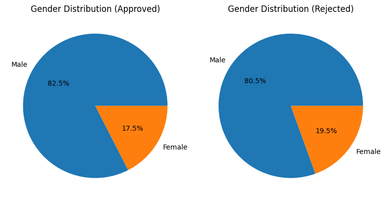
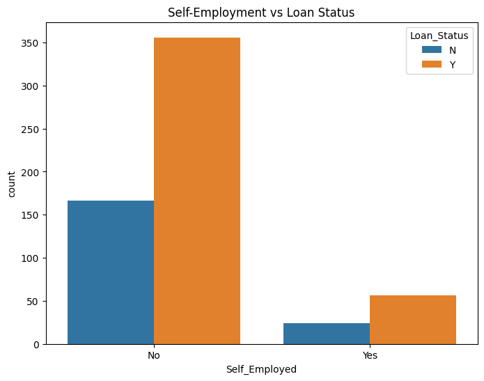
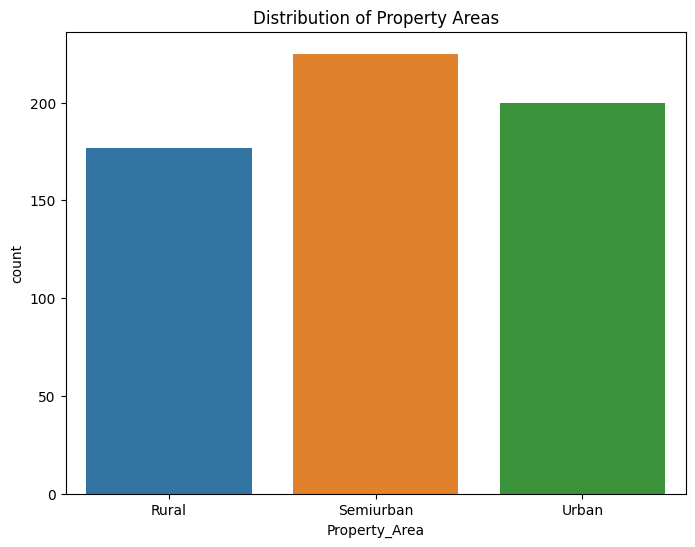
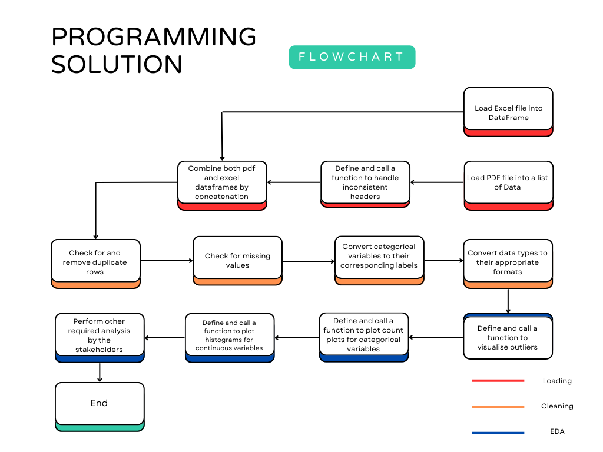

Programming for Data Analysts
Introduction
This report describes the development and impact of a data-driven loan application processing system at Apex Financial Services (AFS). Due to a successful digital marketing effort, the number of loan applications has been steadily rising, which has put pressure on the present manual approval procedure. By using data analytics to partially automate loan processing, this initiative seeks to address these issues and free up the loan team’s valuable time for individualised client engagement.
Link to Python Notebook
Data Source and Suitability
The internal database administrator (DBA) supplied the data for this study from two files: “Loans_Database_Table.pdf,” a PDF file, and “Apex Loans Data.xlsx,” an Excel file. The PDF provides historical information from the prior year’s company loan applications, including a loan approval status field (Yes/No) for every application. This field allows us to map past inputs to loan outcomes, to be used in the future for a supervised machine learning. The Excel file, currently maintained by the Sales team, contains additional loan application details. However, its reliance on a shared folder introduces risks of data duplication and missing values. Data cleaning efforts is necessary to ensure its suitability for analysis.
User Requirements and Benefits
Consulting with a range of AFS stakeholders is part of the development process for this data analysis tool. The tool’s main users will be new recruits in the analytics team. However, potential benefits also extend to other departments like Sales and Customer Service, to whom the insights gained would improve customer targeting and support
Code Development Challenges and Benefits
The project acknowledges challenges associated with code development and maintenance. Our team, which consists of programmers with different degrees of expertise, will work to produce reusable, well-documented code. This strategy will guarantee effective maintenance by team members with a variety of skill sets in addition to making future improvements easier.
Regulatory and Ethical Considerations
Additionally, we understand how crucial ethical issues are when handling sensitive data. Throughout the development and implementation of this solution, we will respect data privacy and comply with all applicable rules.
The suggested approach would streamline the loan application process, enhance resource allocation within the lending team, and may shorten processing time. Furthermore, the data analysis provides significant insights that may be used to influence future marketing campaigns and improve customer support encounters. Failure to solve these difficulties, on the other hand, may result in lengthier approval delays, greater operational risks, and, ultimately, hampered AFS’s development potential.
This report details the proposed approach, key findings from the data analysis, and specific recommendations for improving the loan application process at AFS. It also addresses potential limitations of the study and outlines opportunities for further investigation.
Approach
This section outlines the approach for analyzing a loan dataset to gain insights into loan applications, applicant characteristics, and potential factors influencing loan approvals. The analysis will leverage Python libraries like pandas for data manipulation and Seaborn for visualization.
The approach follows the CRISP-DM (Cross-Industry Standard Process for Data Mining) framework:

The first 3 parts would be explained in the following sections while the latter part of the framework comprise the recommendation section
Business Understanding
- Increased Loan Applications: AFS has experienced a significant rise (over 200%) in loan applications due to a successful online marketing campaign focused on SEO and digital advertising.
- Manual Loan Process: Despite the digital marketing efforts, the loan application process remains manual, with applicants submitting personal information online and loan officers manually reviewing and approving/rejecting applications.
- Resource Constraints: The recent surge in applications has overwhelmed the loan team, leading to skills shortages, longer processing times, and increased operational and control risk.
- Growth Constraints: The current manual process hinders further business growth.
Business Needs:
- Automate Loan Processing: Implement a scalable solution to automate the loan processing workflow, reducing reliance on manual review by loan officers.
- Improve Approval Efficiency: Reduce approval times by automating decision-making based on relevant criteria.
- Mitigate Risk: Minimize operational and control risks associated with a manual process.
- Support Growth: Develop a solution that can handle future increases in loan applications without compromising efficiency or control.
Data Understanding
The data will be obtained from two sources:
Apex Loans Data.xlsx - an Excel File: This file contain loan information for a set of applicants in a structured format, including columns for applicant details, loan characteristics, and approval status.
Loans_Database_Table.pdf - a PDF file: The PDF contains several pages of tables with loan applicant data, much like the Excel file.
Data preparation
Data Loading and Preprocessing
Loading Excel Data: We will use the
pandas.read_excelfunction to import the Excel file into a pandas DataFrame. This DataFrame provides a tabular representation of the loan data for further processing.Loading PDF Data: The
tabula-pylibrary was used to extract data from the PDF tables. Thetabula.read_pdfloaded in the data, recieving as a parameter, the pages to be read. This function returns a list of DataFrames, each representing a separate table from the PDF.PDF Data Cleaning: The next step involves addressing inconsistencies between the Excel and PDF data structures. The code identifies and rectifies a common issue where the first data row in each PDF table might be mistakenly used as column headers for subsequent rows. A function,
concatenate_pdfs, was designed to handle this:- It iterates through the list of DataFrames from the PDF.
- For each DataFrame, it extracts the first row (misplaced headers) and create a new DataFrame with this row as the actual header.
- It then combines the remaining rows (data) of the original DataFrame with the newly created header DataFrame.
- The function ensures consistent column names are applied for all PDF data before concatenation.
Data Concatenation: Once both the Excel and processed PDF DataFrames are prepared, the
pandas.concatfunction was used to merge them into a single comprehensive DataFrame. This DataFrame represents the combined loan dataset for further analysis.
Data Cleaning and Exploration
Data Quality Checks: Initial checks were performed using functions like
head(),shape, andinfo()to assess the data structure, dimensions, data types, and identify potential missing values or duplicates. Setting theLoan_IDas the index simplifies data manipulation.Data Cleaning:
- Duplicate Removal: Duplicate rows identified using
drop_duplicateswere removed to ensure data integrity. - Missing Values: The presence of missing values were checked using
isna().sum(). - Categorical Data Encoding: Categorical variables like marital status, employment status, or property area were mapped to meaningful labels for interpretability.
- Data Type Conversion: Data types for numerical columns were verified and converted to appropriate numerical types for appropriate visualisations.
- Duplicate Removal: Duplicate rows identified using
Exploratory Data Analysis:
This section explores key characteristics of the loan dataset using various EDA techniques to gain insights into loan applications, applicant profiles, and potential factors influencing loan approvals.
Distribution of Applicant Income and Loan Amount:
- Applicant Income: The distribution of applicant income exhibits a significant right skew, with most values concentrated between $10 and $10,000.
- Loan Amount: Excluding outliers exceeding $400,000, the distribution of loan amounts shows a slightly normal shape.

Bivariate Analysis:
Income and Loan Correlation: A slightly positive correlation (0.55) exists between applicant income and co-applicant income with loan amount. This suggests that higher combined income is associated with larger loan requests.

Figure 2: Association between applicant’s income and the amount they loaned
Loan Performance:
- Total Loan Amount: Apex Financial Services (AFS) has disbursed a total of $89,659 in loans.
- Average Loan Characteristics: The average loan amount granted is $148.94 with a term of approximately 333 months.
Applicant Analysis:
- Approval Rates by Gender: There is a disparity in loan approvals by gender. Among approved loans, 82.5% were for male applicants, while 17.5% were for females. Conversely, rejected loans showed a similar breakdown, with 80.5% for males and 19.5% for females. This is not surprising since most loan applicants are male.

- Self-Employed Applicants: Self-employment appears uncommon within the applicant pool. However, for those who identified as self-employed, only 13.59% received loan approval. This suggests potential differences in approval criteria for self-employed applicants compared to salaried individuals.

Top Loan Applicants: The top 10 applicants by loan amount share some commonalities. Notably, they are predominantly married men with graduate degrees and significantly higher incomes compared to the rest of the applicant pool, exceeding the 75th percentile for income.
Property Area Distribution: Applicants were relatively evenly distributed across the three property areas (rural, suburban, semi-urban), with semi-urban dwellers having the greatest representation.

Figure 5: Distribution of Applicants Dwellings
Code Libraries Used and Rationale
Pandas: This powerful library is a workhorse for data manipulation and exploration in Python. It provides functionalities like loading data from various sources (including Excel with
pd.read_excel), cleaning and transforming data (including removing duplicates with.drop_duplicates), and performing various data analysis tasks. Pandas offers a user-friendly interface and efficient data structures, making it ideal for handling the loan dataset.Tabula-py: Extracting data from PDF tables can be challenging. Tabula-py simplifies this process by offering the
tabula.read_pdffunction. This function reads PDF documents and extract the tabular data within them.Seaborn (with Matplotlib dependency): Seaborn builds upon the foundation of Matplotlib, a fundamental Python library for creating various visualizations. Seaborn offers a higher-level interface, simplifying the creation of aesthetically pleasing and informative visualizations.
Matplotlib: This fundamental python library was used to annotate and adjust the plots made with Seaborn.
Choice of Language (Python) and Platform (Google Colab)
Python: Python is a popular choice for data analysis due to its readability, extensive ecosystem of libraries like Pandas, Seaborn, and many others, and its focus on clean and concise code. These features make Python ideal for data exploration and analysis, allowing the code to be well-structured and easily understood by others.
Google Colab: Google Colab provides a free cloud-based Jupyter notebook environment. This platform eliminates the need for local software installation and offers access to powerful computing resources, making it suitable for working large datasets. Additionally, Colab facilitates collaboration and easy sharing of Python notebooks.
Code Design and Maintainability
Pseudocode: Using pseudocode comments within the script can enhance readability and understanding, even for those unfamiliar with Python specifically. Pseudocode outlines the logic and steps involved in the analysis without getting bogged down in language syntax. This allows for easier comprehension and potential translation into other programming languages if needed. 
Version Control (Git): Utilizing version control systems like Git allows for tracking changes made to the code over time. This facilitates reverting to previous versions if necessary, identifying who made specific changes, and enabling collaboration.
Code Comments: Including clear and concise comments within the code explains the purpose of different sections, clarifies variable names, and documents the overall logic. This improves readability and maintainability, allowing other members of the team to understand the code’s functionality and facilitating future modifications.
Recommendations
1. Data Preprocessing (Building upon Existing Work): The data cleaning and exploration steps outlined in the previous sections provide a solid foundation for model development.
2. Feature Engineering:
- Feature Selection: The existing dataset contains various features. It’s crucial to identify the most relevant features that hold predictive power for loan approvals. Techniques like correlation analysis, chi-square tests, and feature importance scores from initial models can guide this selection process.
- Feature Creation: Creating new features based on existing ones should be considered. For example, a debt-to-income (DTI) ratio could be calculated by dividing total debt by income. Feature creation can help capture more complex relationships within the data.
- Data Encoding: Categorical variables like marital status or property area might require encoding into numerical representations suitable for machine learning algorithms. Techniques like one-hot encoding can be employed here.
3. Model Selection and Training:
- Tree-Based Models: Given the established dominance of tree-based models and their effectiveness with tabular data, XGBoost is a strong candidate (Shwartz-Ziv and Armon, 2022). XGBoost (Extreme Gradient Boosting) is a powerful and versatile ensemble method that excels at handling complex relationships and feature interactions. Its ability to handle missing values and perform automatic feature selection further adds to its appeal.
- Alternative Models: Other models like Random Forest, Logistic Regression, or Support Vector Machines (SVM) could also be explored for comparison. Evaluating different models helps identify the one that performs best on the specific loan dataset.
4. Model Training and Evaluation:
- Train-Test Split: The cleaned and preprocessed data needs to be divided into training and testing sets. The training set (typically 70-80% of the data) will be used to train the model, while the testing set (remaining 20-30%) will be used to evaluate its performance on unseen data.
- Model Training: The chosen model, say XGBoost, will be trained on the training data. Hyperparameter tuning, which involves adjusting model parameters to optimize performance, might be necessary. Tools like GridSearchCV can be used for this purpose.
- Evaluation Metrics: Once trained, the model’s performance will be evaluated on the testing set. Common metrics for binary classification problems like loan approval prediction include:
- Accuracy: Measures the overall proportion of correct predictions (approved/rejected) made by the model.
- Precision: Indicates the proportion of predicted approvals that were truly approved loans.
- Recall: Represents the proportion of actual approved loans that the model correctly predicted as approved.
- F1 Score: Combines precision and recall into a single metric, providing a balanced view of the model’s performance.
- Area Under the ROC Curve (AUC): Measures the model’s ability to distinguish between approved and rejected loans. A higher AUC indicates better discrimination.
5. Model Deployment and Monitoring:
- Deployment: Based on the chosen model and evaluation results, a strategy for deploying the model into production can be developed. This could involve integrating the model into AFS’s loan processing system in a cloud environment like Docker to provide real-time loan approval predictions.
- Monitoring: It’s essential to monitor the model’s performance over time as new loan applications are submitted. Performance metrics can be tracked to identify any degradation in accuracy. Periodic retraining with fresh data might be necessary to maintain optimal performance.
Tools and Libraries:
- Scikit-learn: This machine learning library offers a wide range of algorithms, including XGBoost, Random Forest, Logistic Regression, and SVM. It also provides functionalities for data splitting, feature scaling, and model evaluation metrics.
- XGBoost: This specialized library offers an optimized implementation of the XGBoost algorithm, allowing for efficient training and hyperparameter tuning.
- Pandas and NumPy: These libraries will continue to be crucial for data manipulation and numerical computations during feature engineering and model evaluation.
- Matplotlib/Seaborn: While not directly used for model development, these libraries might be helpful for visualizing model performance metrics and feature importance scores.
Reference
Tounsi, Y., Anoun, H. and Hassouni, L. (2020) ‘CSMAS: Improving Multi-Agent Credit Scoring System by Integrating Big Data and the new generation of Gradient Boosting Algorithms’, pp. 1-7. doi: 10.1145/3386723.3387851.
Shwartz-Ziv, R. and Armon, A., 2022. Tabular data: Deep learning is not all you need. Information Fusion, 81, pp.84-90.
Appendices
Appendix 1 - Notebook contents
Appendix 3 - Design Pseudocode
# Data Ingestion
Load Excel file data into DataFrame 'loans_xlsx'
Load PDF file data into a list of DataFrames 'loans_df_list'
Define a function 'concatenate_pdfs' to handle inconsistent headers in PDF files
Process the first DataFrame as-is
For the remaining DataFrames:
Extract misplaced headers and create a new DataFrame
Assign correct headers from the first DataFrame
Concatenate with the remaining rows of the original DataFrame
Append the corrected DataFrame to the 'processed_dfs' list
Concatenate all DataFrames in 'processed_dfs' into a single DataFrame 'loans_pdf'
Combine 'loans_xlsx' and 'loans_pdf' into a single DataFrame 'loans'
# Data Cleaning and Preprocessing
Check for and remove duplicate rows in 'loans'
Handle missing values in 'loans'
Convert categorical variables to their corresponding labels
Convert data types to appropriate formats
# Exploratory Data Analysis (EDA)
Define a function 'visualize_outliers' to plot boxplots for numeric columns
Create a grid of subplots based on the number of numeric columns
Plot each numeric column in a separate subplot
Define a function 'plot_categorical_distributions' to plot count plots for categorical columns
For each categorical column:
Create a subplot and plot the count plot
Define a function 'plot_continuous_histograms' to plot histograms for continuous columns
For each continuous column:
Create a subplot and plot the histogram
Perform bivariate analysis using a pairplot
# Required Analyses
Calculate the total amount loaned, average loan amount, and average loan term
Analyze the applicant counts by approval status and gender
Investigate the gender distribution of approved and rejected loan applicants
Identify the maximum and minimum loan amounts and visualize the loan amount distribution
Calculate the percentage of self-employed applicants with approved loans
Analyze the income distribution of main applicants
Identify the top 10 applicants by loan amount
Visualize the distribution of property areas for loan applicants